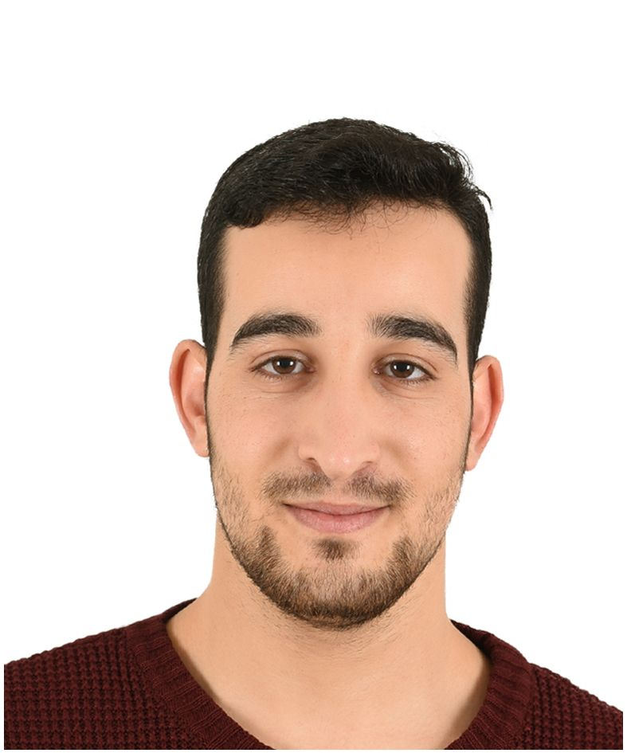

Huzeyfe MUHAMMED

Summary
Experienced Arabic Translator with a strong background in translation and
language teaching, specializing in Arabic, Turkish, and English
translations. Holds a Bachelor's degree in Turkish Teaching and is
currently pursuing a Master's degree in Turkish Language Teaching. Aiming
to utilize language skills and educational expertise to contribute
effectively in translation and language education roles.
Education (list degrees, schools, and dates):
-
Bachelor of Turkish Teaching
- University: Kırıkkale University
- Faculty: Education Faculty / Turkish Teaching
- Graduation Year: 2020
-
Master of Turkish Language Teaching (In progress) University
- University: İstanbul University - Cerrahpaşa
- Faculty: Education Faculty / Master of Turkish
- Graduation Year: Ongoing
-
Computer Programming (Associate's degree)
- University: Anadolu University - Kırşehir
- Faculty: Computer Programming
- Graduation Year: 2024
Work Experience
-
Arabic Translator
-
Employer: İSNET İstanbul Net Telekomünikasyon Elektronik
Servis Hizmetleri Tic. ve San. A.Ş., Ankara, Turkey
- Dates: April 2021 – Present
-
Responsibilities:
-
Provide translation and support services for foreign nationals
calling emergency hotlines (112 and 184) and Ministry of Health
units.
-
Assist foreign patients and tourists with health-related issues.
-
Translate medical reports of international patients treated in
Ministry of Health hospitals.
-
Sworn Translator (Arabic and Ottoman Turkish)
- Certifying Authority: Second Notary in Batman
- Dates: August 2020 – Present
-
Freelance Translator (Part-time)
-
Employer: Delta Tercüme - Delta İnşaat Elektrik Elektronik
Medikal Hizmetleri Organizasyon San. ve Tic. Ltd. Şti., Ankara,
Turkey
- Dates: December 2017 – Present
-
Responsibilities:
-
Translate brochures, websites, and foreign trade materials
between Arabic and Turkish.
-
Participate in translating books between Arabic and Turkish.
Skills
-
Languages:
-
Arabic: Native proficiency (Reading 5/5, Writing 5/5,
Speaking 5/5) (★★★★★)
-
Turkish: Fluent (Reading 5/5, Writing 5/5, Speaking 5/5)
(★★★★★)
-
English: Intermediate (Reading 3/5, Writing 4/5, Speaking
1/5) (★★★)
-
Computer Skills:
-
Proficient in Microsoft Word, PowerPoint, Excel, Office, Outlook
- Media experience and desktop publishing skills
-
Driving License:
Awards, Certificates, and Other Achievements
Courses and Seminars
-
Turkish Language Teaching Certificate Program
- Institution: Yıldız Technical University
- Year: 2020
-
Description: Enhanced professional skills in teaching Turkish
as a foreign language.
-
Ottoman Turkish Archive Readings
- Institution: Ministry of Education
- Year: 2019
-
Marbling (Ebru Art)
- Institution: Ministry of Education
- Year: 2018
-
Diction and Public Speaking
- Institution: Ministry of Education
- Year: 2017
-
Description: Focused on the art of persuasion and effective
communication, emphasizing emotional engagement and impactful
delivery.
-
Fast and Effective Reading
- Institution: Ministry of Education
- Year: 2017
Examinations
-
ALES (Academic Personnel and Graduate Education Entrance Exam)
- Score: 54.25865
- Organization: ÖSYM
- Year: 2019
-
YDS (Foreign Language Examination)
- Score: 97.5
- Organization: ÖSYM
- Year: 2019
Scholarships
- Türkiye Bursları (Turkish Scholarships)
Volunteer Projects and Services
-
Immigration Management Center Translation
-
Provided direct translation services for five months, full-time on a
voluntary basis, benefiting beneficiaries of the Immigration
Management Center in Kırıkkale (Turkish, Arabic).
-
Volunteer Teaching Team
-
Organized a student volunteer team to teach the Turkish language to
refugee children in Kırıkkale for a period of five months.
Other